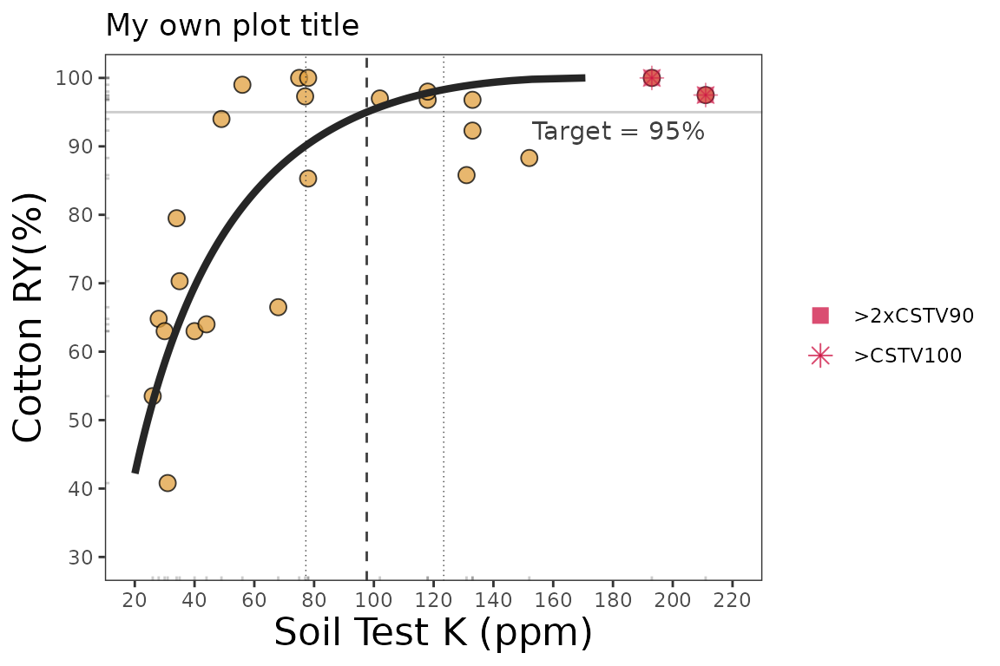
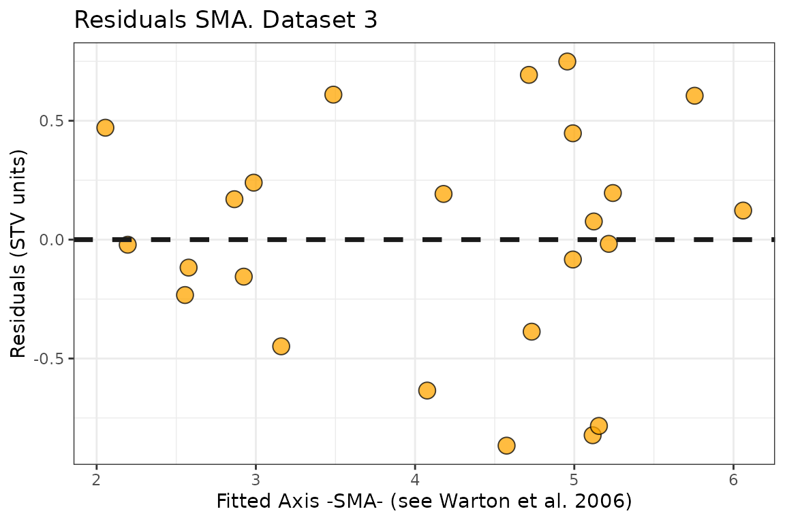

Description
This tutorial is intended to show how to deploy the mod_alcc()
function for estimating critical soil test values using the Modified
Arcsine-Log Calibration Curve, originally introduced by Dyson &
Conyers (2013) and modified by Correndo et al. (2017). This function
produces the estimation of critical soil test values (CSTV) for a target
relative yield (ry) with confidence intervals at adjustable confidence
levels. Behind the scenes, the mod_alcc() is based on the standardized
major axis (SMA), a bivariate regression model that assumes that both
axis are random variables (Warton et al., 2006)
General Instructions
Load your dataframe with soil test value (stv) and relative yield (ry) data.
Specify the following arguments into the function -mod_alcc()-:
(a). data (optional),
(b). stv (soil test value) and ry (relative
yield) columns or vectors,
(c). target of relative yield (e.g. 90%),
(d). desired confidence level (e.g. 0.95 for 1 -
alpha(0.05)). Used for the estimation of critical soil test value (CSTV)
lower and upper limits.
(e). tidy TRUE (produces a data.frame with results) or
FALSE-default- (store results as list),
(f). plot TRUE (produces a ggplot as main output) or
FALSE -default- (no plot, only results as list or data.frame),
Run and check results.
Check residuals plot, and warnings related to potential leverage points.
Adjust curve plots as desired.
Tutorial
Suggested packages
# Install if needed
library(ggplot2) # Plots
library(dplyr) # Data wrangling
library(tidyr) # Data wrangling
library(utils) # Data wrangling
library(data.table) # Mapping
library(purrr) # MappingThis is a basic example using three different datasets:
Load datasets
# Example 1 dataset
# Fake dataset manually created
data_1 <- data.frame("RY" = c(65,80,85,88,90,94,93,96,97,95,98,100,99,99,100),
"STV" = c(1,2,3,4,5,6,7,8,9,10,11,12,13,14,15))
# Example 2. Native fake dataset from soiltestcorr package
data_2 <- soiltestcorr::data_test
# Example 3. Native dataset from soiltestcorr package, Freitas et al. (1966), used by Cate & Nelson (1971)
data_3 <- soiltestcorr::freitas1966Fit mod_alcc()
1. Individual fits
RY target = 90%, confidence level = 0.95, replace with your desired
values
1.1. tidy = FALSE
It returns a LIST (more efficient for multiple fits at once)
# Using dataframe argument, tidy = FALSE -> return a LIST
fit_1_tidy_false <-
soiltestcorr::mod_alcc(data = data_1,
ry = RY,
stv = STV,
target=90,
confidence = 0.95,
tidy = FALSE)
#> Warning: 7 STV points exceeded two-times (2x)
#> the CSTV for 90% of RY. Risk of leverage. You may consider a sensitivity analysis by
#> removing extreme points, re-run the mod_alcc(), and check results.
utils::head(fit_1_tidy_false)
#> $n
#> [1] 15
#>
#> $r
#> [1] 0.9682908
#>
#> $target
#> [1] 90
#>
#> $CSTV
#> [1] 4.478476
#>
#> $LL
#> [1] 3.947041
#>
#> $UL
#> [1] 5.0814631.2. tidy = TRUE
It returns a data.frame (more organized results)
# Using dataframe argument, tidy = FALSE -> return a LIST
fit_1_tidy_true <-
soiltestcorr::mod_alcc(data = data_1,
ry = RY,
stv = STV,
target=90,
confidence = 0.95,
tidy = TRUE)
#> Warning: 7 STV points exceeded two-times (2x)
#> the CSTV for 90% of RY. Risk of leverage. You may consider a sensitivity analysis by
#> removing extreme points, re-run the mod_alcc(), and check results.
fit_1_tidy_true
#> n r target CSTV LL UL confidence p_value
#> 1 15 0.9682908 90 4.478476 3.947041 5.081463 0.95 3.296044e-09
#> CSTV90 n.90x2 CSTV100 n.100
#> 1 4.478476 7 19.15054 0
#> Curve
#> 1 65.000000, 65.200000, 65.400000, 65.600000, 65.800000, 66.000000, 66.200000, 66.400000, 66.600000, 66.800000, 67.000000, 67.200000, 67.400000, 67.600000, 67.800000, 68.000000, 68.200000, 68.400000, 68.600000, 68.800000, 69.000000, 69.200000, 69.400000, 69.600000, 69.800000, 70.000000, 70.200000, 70.400000, 70.600000, 70.800000, 71.000000, 71.200000, 71.400000, 71.600000, 71.800000, 72.000000, 72.200000, 72.400000, 72.600000, 72.800000, 73.000000, 73.200000, 73.400000, 73.600000, 73.800000, 74.000000, 74.200000, 74.400000, 74.600000, 74.800000, 75.000000, 75.200000, 75.400000, 75.600000, 75.800000, 76.000000, 76.200000, 76.400000, 76.600000, 76.800000, 77.000000, 77.200000, 77.400000, 77.600000, 77.800000, 78.000000, 78.200000, 78.400000, 78.600000, 78.800000, 79.000000, 79.200000, 79.400000, 79.600000, 79.800000, 80.000000, 80.200000, 80.400000, 80.600000, 80.800000, 81.000000, 81.200000, 81.400000, 81.600000, 81.800000, 82.000000, 82.200000, 82.400000, 82.600000, 82.800000, 83.000000, 83.200000, 83.400000, 83.600000, 83.800000, 84.000000, 84.200000, 84.400000, 84.600000, 84.800000, 85.000000, 85.200000, 85.400000, 85.600000, 85.800000, 86.000000, 86.200000, 86.400000, 86.600000, 86.800000, 87.000000, 87.200000, 87.400000, 87.600000, 87.800000, 88.000000, 88.200000, 88.400000, 88.600000, 88.800000, 89.000000, 89.200000, 89.400000, 89.600000, 89.800000, 90.000000, 90.200000, 90.400000, 90.600000, 90.800000, 91.000000, 91.200000, 91.400000, 91.600000, 91.800000, 92.000000, 92.200000, 92.400000, 92.600000, 92.800000, 93.000000, 93.200000, 93.400000, 93.600000, 93.800000, 94.000000, 94.200000, 94.400000, 94.600000, 94.800000, 95.000000, 95.200000, 95.400000, 95.600000, 95.800000, 96.000000, 96.200000, 96.400000, 96.600000, 96.800000, 97.000000, 97.200000, 97.400000, 97.600000, 97.800000, 98.000000, 98.200000, 98.400000, 98.600000, 98.800000, 99.000000, 99.200000, 99.400000, 99.600000, 99.800000, 100.000000, 1.097927, 1.108379, 1.118944, 1.129625, 1.140423, 1.151339, 1.162376, 1.173535, 1.184817, 1.196225, 1.207760, 1.219425, 1.231221, 1.243150, 1.255214, 1.267415, 1.279755, 1.292236, 1.304860, 1.317630, 1.330548, 1.343616, 1.356836, 1.370210, 1.383742, 1.397433, 1.411286, 1.425303, 1.439488, 1.453842, 1.468369, 1.483071, 1.497951, 1.513012, 1.528257, 1.543689, 1.559311, 1.575127, 1.591138, 1.607350, 1.623765, 1.640386, 1.657217, 1.674262, 1.691525, 1.709008, 1.726717, 1.744655, 1.762826, 1.781234, 1.799883, 1.818779, 1.837924, 1.857325, 1.876985, 1.896910, 1.917103, 1.937572, 1.958319, 1.979352, 2.000675, 2.022293, 2.044214, 2.066441, 2.088983, 2.111844, 2.135031, 2.158551, 2.182410, 2.206616, 2.231175, 2.256095, 2.281384, 2.307048, 2.333097, 2.359537, 2.386379, 2.413629, 2.441298, 2.469395, 2.497929, 2.526910, 2.556347, 2.586252, 2.616636, 2.647508, 2.678882, 2.710768, 2.743179, 2.776127, 2.809626, 2.843690, 2.878331, 2.913565, 2.949407, 2.985872, 3.022976, 3.060736, 3.099169, 3.138294, 3.178128, 3.218691, 3.260004, 3.302086, 3.344960, 3.388649, 3.433176, 3.478564, 3.524841, 3.572032, 3.620165, 3.669269, 3.719374, 3.770512, 3.822716, 3.876020, 3.930460, 3.986075, 4.042904, 4.100988, 4.160372, 4.221100, 4.283223, 4.346790, 4.411856, 4.478476, 4.546710, 4.616622, 4.688278, 4.761749, 4.837110, 4.914440, 4.993823, 5.075351, 5.159117, 5.245225, 5.333784, 5.424910, 5.518728, 5.615374, 5.714992, 5.817737, 5.923779, 6.033299, 6.146495, 6.263582, 6.384794, 6.510388, 6.640644, 6.775870, 6.916408, 7.062634, 7.214969, 7.373879, 7.539891, 7.713596, 7.895664, 8.086860, 8.288063, 8.500287, 8.724716, 8.962742, 9.216022, 9.486552, 9.776766, 10.089688, 10.429142, 10.800084, 11.209119, 11.665380, 12.182103, 12.779738, 13.492946, 14.389790, 15.647308, 19.150544
#> SMA
#> 1 0.00000000, 0.69314718, 1.09861229, 1.38629436, 1.60943791, 1.79175947, 1.94591015, 2.07944154, 2.19722458, 2.30258509, 2.39789527, 2.48490665, 2.56494936, 2.63905733, 2.70805020, -0.31130128, -0.14189705, -0.07594886, -0.03199105, 0.00000000, 0.07428349, 0.05398723, 0.12039263, 0.14766754, 0.09623715, 0.17985350, 0.32175055, 0.22158313, 0.22158313, 0.32175055, 0.09342397, 0.85846552, 1.15629226, 1.35480886, 1.49928272, 1.83475226, 1.74309289, 2.04298443, 2.16615987, 1.93389654, 2.31151393, 2.95233114, 2.49996793, 2.49996793, 2.95233114, -0.09342397, -0.16531834, -0.05767997, 0.03148550, 0.11015519, -0.04299279, 0.20281726, 0.03645711, 0.03106471, 0.36868855, 0.08638134, -0.46742449, 0.06498143, 0.13908940, -0.24428093, -1.40585875, 0.05232998, 0.75562183, 1.24182049, 1.60943791, 2.12722900, 2.18972031, 2.62314325, 2.86410172, 2.73719891, 3.21012648, 3.93795506, 3.56563456, 3.63974254, 4.161098611.3. Alternative using the vectors
You can call stv and ry vectors using the
$.
The tidy argument still applies for controlling the
output type
fit_1_vectors_list <-
soiltestcorr::mod_alcc(ry = data_1$RY,
stv = data_1$STV,
target=90,
confidence = 0.95,
tidy = FALSE)
#> Warning: 7 STV points exceeded two-times (2x)
#> the CSTV for 90% of RY. Risk of leverage. You may consider a sensitivity analysis by
#> removing extreme points, re-run the mod_alcc(), and check results.
fit_1_vectors_tidy <-
soiltestcorr::mod_alcc(ry = data_1$RY,
stv = data_1$STV,
target=90,
confidence = 0.95,
tidy = TRUE)
#> Warning: 7 STV points exceeded two-times (2x)
#> the CSTV for 90% of RY. Risk of leverage. You may consider a sensitivity analysis by
#> removing extreme points, re-run the mod_alcc(), and check results.1.4. Data 2. Test dataset
fit_2 <-
soiltestcorr::mod_alcc(data = data_2,
ry = RY,
stv = STV,
target=90,
confidence = 0.95)
#> Warning: 9 STV points exceeded the CSTV for 100% of RY.
#> Risk of leverage. You may consider a sensitivity analysis by removing extreme points,
#> re-run the mod_alcc(), and check results.
#> Warning: 22 STV points exceeded two-times (2x)
#> the CSTV for 90% of RY. Risk of leverage. You may consider a sensitivity analysis by
#> removing extreme points, re-run the mod_alcc(), and check results.
utils::head(fit_2)
#> $n
#> [1] 137
#>
#> $r
#> [1] 0.7164928
#>
#> $target
#> [1] 90
#>
#> $CSTV
#> [1] 23.25457
#>
#> $LL
#> [1] 21.57156
#>
#> $UL
#> [1] 25.068881.5. Data 3. Freitas et al. 1966
fit_3 <-
soiltestcorr::mod_alcc(data = data_3,
ry = RY,
stv = STK,
target=90,
confidence = 0.95)
#> Warning: One or more original RY values exceeded 100%. All RY values greater
#> than 100% have been capped to 100%.
#> Warning: 2 STV points exceeded the CSTV for 100% of RY.
#> Risk of leverage. You may consider a sensitivity analysis by removing extreme points,
#> re-run the mod_alcc(), and check results.
#> Warning: 2 STV points exceeded two-times (2x)
#> the CSTV for 90% of RY. Risk of leverage. You may consider a sensitivity analysis by
#> removing extreme points, re-run the mod_alcc(), and check results.
utils::head(fit_3)
#> $n
#> [1] 24
#>
#> $r
#> [1] 0.7277644
#>
#> $target
#> [1] 90
#>
#> $CSTV
#> [1] 76.89175
#>
#> $LL
#> [1] 62.34761
#>
#> $UL
#> [1] 94.828682. Multiple fits at once
2.1. Using map
Fit
# Run multiple examples at once with map()
fit_multiple_map = data.all %>%
dplyr::mutate(mod_alcc = purrr::map(data,
~ soiltestcorr::mod_alcc(ry = .$RY,
stv = .$STV,
target=90,
confidence = 0.95,
tidy = TRUE)))
#> Warning: There were 6 warnings in `dplyr::mutate()`.
#> The first warning was:
#> ℹ In argument: `mod_alcc = purrr::map(...)`.
#> Caused by warning:
#> ! 7 STV points exceeded two-times (2x)
#> the CSTV for 90% of RY. Risk of leverage. You may consider a sensitivity analysis by
#> removing extreme points, re-run the mod_alcc(), and check results.
#> ℹ Run `dplyr::last_dplyr_warnings()` to see the 5 remaining warnings.
utils::head(fit_multiple_map)
#> # A tibble: 3 × 3
#> id data mod_alcc
#> <chr> <list> <list>
#> 1 1 <tibble [15 × 2]> <df [1 × 14]>
#> 2 2 <tibble [137 × 2]> <df [1 × 14]>
#> 3 3 <tibble [24 × 2]> <df [1 × 14]>2.2. Using group_map
Alternatively, with group_map, we do not require nested data.
However, it requires to dplyr::bind_rows and add an id
column specifying the name of each dataset.
This option return models as lists objects.
fit_multiple_group_map <-
dplyr::bind_rows(data_1, data_2, .id = "id") %>%
dplyr::group_by(id) %>%
dplyr::group_map(~ soiltestcorr::mod_alcc(data = .,
ry = RY,
stv = STV,
target = 90,
confidence = 0.95, tidy = TRUE))
#> Warning: 7 STV points exceeded two-times (2x)
#> the CSTV for 90% of RY. Risk of leverage. You may consider a sensitivity analysis by
#> removing extreme points, re-run the mod_alcc(), and check results.
#> Warning: 9 STV points exceeded the CSTV for 100% of RY.
#> Risk of leverage. You may consider a sensitivity analysis by removing extreme points,
#> re-run the mod_alcc(), and check results.
#> Warning: 22 STV points exceeded two-times (2x)
#> the CSTV for 90% of RY. Risk of leverage. You may consider a sensitivity analysis by
#> removing extreme points, re-run the mod_alcc(), and check results.
utils::head(fit_multiple_group_map)
#> [[1]]
#> n r target CSTV LL UL confidence p_value
#> 1 15 0.9682908 90 4.478476 3.947041 5.081463 0.95 3.296044e-09
#> CSTV90 n.90x2 CSTV100 n.100
#> 1 4.478476 7 19.15054 0
#> Curve
#> 1 65.000000, 65.200000, 65.400000, 65.600000, 65.800000, 66.000000, 66.200000, 66.400000, 66.600000, 66.800000, 67.000000, 67.200000, 67.400000, 67.600000, 67.800000, 68.000000, 68.200000, 68.400000, 68.600000, 68.800000, 69.000000, 69.200000, 69.400000, 69.600000, 69.800000, 70.000000, 70.200000, 70.400000, 70.600000, 70.800000, 71.000000, 71.200000, 71.400000, 71.600000, 71.800000, 72.000000, 72.200000, 72.400000, 72.600000, 72.800000, 73.000000, 73.200000, 73.400000, 73.600000, 73.800000, 74.000000, 74.200000, 74.400000, 74.600000, 74.800000, 75.000000, 75.200000, 75.400000, 75.600000, 75.800000, 76.000000, 76.200000, 76.400000, 76.600000, 76.800000, 77.000000, 77.200000, 77.400000, 77.600000, 77.800000, 78.000000, 78.200000, 78.400000, 78.600000, 78.800000, 79.000000, 79.200000, 79.400000, 79.600000, 79.800000, 80.000000, 80.200000, 80.400000, 80.600000, 80.800000, 81.000000, 81.200000, 81.400000, 81.600000, 81.800000, 82.000000, 82.200000, 82.400000, 82.600000, 82.800000, 83.000000, 83.200000, 83.400000, 83.600000, 83.800000, 84.000000, 84.200000, 84.400000, 84.600000, 84.800000, 85.000000, 85.200000, 85.400000, 85.600000, 85.800000, 86.000000, 86.200000, 86.400000, 86.600000, 86.800000, 87.000000, 87.200000, 87.400000, 87.600000, 87.800000, 88.000000, 88.200000, 88.400000, 88.600000, 88.800000, 89.000000, 89.200000, 89.400000, 89.600000, 89.800000, 90.000000, 90.200000, 90.400000, 90.600000, 90.800000, 91.000000, 91.200000, 91.400000, 91.600000, 91.800000, 92.000000, 92.200000, 92.400000, 92.600000, 92.800000, 93.000000, 93.200000, 93.400000, 93.600000, 93.800000, 94.000000, 94.200000, 94.400000, 94.600000, 94.800000, 95.000000, 95.200000, 95.400000, 95.600000, 95.800000, 96.000000, 96.200000, 96.400000, 96.600000, 96.800000, 97.000000, 97.200000, 97.400000, 97.600000, 97.800000, 98.000000, 98.200000, 98.400000, 98.600000, 98.800000, 99.000000, 99.200000, 99.400000, 99.600000, 99.800000, 100.000000, 1.097927, 1.108379, 1.118944, 1.129625, 1.140423, 1.151339, 1.162376, 1.173535, 1.184817, 1.196225, 1.207760, 1.219425, 1.231221, 1.243150, 1.255214, 1.267415, 1.279755, 1.292236, 1.304860, 1.317630, 1.330548, 1.343616, 1.356836, 1.370210, 1.383742, 1.397433, 1.411286, 1.425303, 1.439488, 1.453842, 1.468369, 1.483071, 1.497951, 1.513012, 1.528257, 1.543689, 1.559311, 1.575127, 1.591138, 1.607350, 1.623765, 1.640386, 1.657217, 1.674262, 1.691525, 1.709008, 1.726717, 1.744655, 1.762826, 1.781234, 1.799883, 1.818779, 1.837924, 1.857325, 1.876985, 1.896910, 1.917103, 1.937572, 1.958319, 1.979352, 2.000675, 2.022293, 2.044214, 2.066441, 2.088983, 2.111844, 2.135031, 2.158551, 2.182410, 2.206616, 2.231175, 2.256095, 2.281384, 2.307048, 2.333097, 2.359537, 2.386379, 2.413629, 2.441298, 2.469395, 2.497929, 2.526910, 2.556347, 2.586252, 2.616636, 2.647508, 2.678882, 2.710768, 2.743179, 2.776127, 2.809626, 2.843690, 2.878331, 2.913565, 2.949407, 2.985872, 3.022976, 3.060736, 3.099169, 3.138294, 3.178128, 3.218691, 3.260004, 3.302086, 3.344960, 3.388649, 3.433176, 3.478564, 3.524841, 3.572032, 3.620165, 3.669269, 3.719374, 3.770512, 3.822716, 3.876020, 3.930460, 3.986075, 4.042904, 4.100988, 4.160372, 4.221100, 4.283223, 4.346790, 4.411856, 4.478476, 4.546710, 4.616622, 4.688278, 4.761749, 4.837110, 4.914440, 4.993823, 5.075351, 5.159117, 5.245225, 5.333784, 5.424910, 5.518728, 5.615374, 5.714992, 5.817737, 5.923779, 6.033299, 6.146495, 6.263582, 6.384794, 6.510388, 6.640644, 6.775870, 6.916408, 7.062634, 7.214969, 7.373879, 7.539891, 7.713596, 7.895664, 8.086860, 8.288063, 8.500287, 8.724716, 8.962742, 9.216022, 9.486552, 9.776766, 10.089688, 10.429142, 10.800084, 11.209119, 11.665380, 12.182103, 12.779738, 13.492946, 14.389790, 15.647308, 19.150544
#> SMA
#> 1 0.00000000, 0.69314718, 1.09861229, 1.38629436, 1.60943791, 1.79175947, 1.94591015, 2.07944154, 2.19722458, 2.30258509, 2.39789527, 2.48490665, 2.56494936, 2.63905733, 2.70805020, -0.31130128, -0.14189705, -0.07594886, -0.03199105, 0.00000000, 0.07428349, 0.05398723, 0.12039263, 0.14766754, 0.09623715, 0.17985350, 0.32175055, 0.22158313, 0.22158313, 0.32175055, 0.09342397, 0.85846552, 1.15629226, 1.35480886, 1.49928272, 1.83475226, 1.74309289, 2.04298443, 2.16615987, 1.93389654, 2.31151393, 2.95233114, 2.49996793, 2.49996793, 2.95233114, -0.09342397, -0.16531834, -0.05767997, 0.03148550, 0.11015519, -0.04299279, 0.20281726, 0.03645711, 0.03106471, 0.36868855, 0.08638134, -0.46742449, 0.06498143, 0.13908940, -0.24428093, -1.40585875, 0.05232998, 0.75562183, 1.24182049, 1.60943791, 2.12722900, 2.18972031, 2.62314325, 2.86410172, 2.73719891, 3.21012648, 3.93795506, 3.56563456, 3.63974254, 4.16109861
#>
#> [[2]]
#> n r target CSTV LL UL confidence p_value
#> 1 137 0.7164928 90 23.25457 21.57156 25.06888 0.95 7.314913e-23
#> CSTV90 n.90x2 CSTV100 n.100
#> 1 23.25457 22 53.10299 9
#> Curve
#> 1 12.000000, 12.200000, 12.400000, 12.600000, 12.800000, 13.000000, 13.200000, 13.400000, 13.600000, 13.800000, 14.000000, 14.200000, 14.400000, 14.600000, 14.800000, 15.000000, 15.200000, 15.400000, 15.600000, 15.800000, 16.000000, 16.200000, 16.400000, 16.600000, 16.800000, 17.000000, 17.200000, 17.400000, 17.600000, 17.800000, 18.000000, 18.200000, 18.400000, 18.600000, 18.800000, 19.000000, 19.200000, 19.400000, 19.600000, 19.800000, 20.000000, 20.200000, 20.400000, 20.600000, 20.800000, 21.000000, 21.200000, 21.400000, 21.600000, 21.800000, 22.000000, 22.200000, 22.400000, 22.600000, 22.800000, 23.000000, 23.200000, 23.400000, 23.600000, 23.800000, 24.000000, 24.200000, 24.400000, 24.600000, 24.800000, 25.000000, 25.200000, 25.400000, 25.600000, 25.800000, 26.000000, 26.200000, 26.400000, 26.600000, 26.800000, 27.000000, 27.200000, 27.400000, 27.600000, 27.800000, 28.000000, 28.200000, 28.400000, 28.600000, 28.800000, 29.000000, 29.200000, 29.400000, 29.600000, 29.800000, 30.000000, 30.200000, 30.400000, 30.600000, 30.800000, 31.000000, 31.200000, 31.400000, 31.600000, 31.800000, 32.000000, 32.200000, 32.400000, 32.600000, 32.800000, 33.000000, 33.200000, 33.400000, 33.600000, 33.800000, 34.000000, 34.200000, 34.400000, 34.600000, 34.800000, 35.000000, 35.200000, 35.400000, 35.600000, 35.800000, 36.000000, 36.200000, 36.400000, 36.600000, 36.800000, 37.000000, 37.200000, 37.400000, 37.600000, 37.800000, 38.000000, 38.200000, 38.400000, 38.600000, 38.800000, 39.000000, 39.200000, 39.400000, 39.600000, 39.800000, 40.000000, 40.200000, 40.400000, 40.600000, 40.800000, 41.000000, 41.200000, 41.400000, 41.600000, 41.800000, 42.000000, 42.200000, 42.400000, 42.600000, 42.800000, 43.000000, 43.200000, 43.400000, 43.600000, 43.800000, 44.000000, 44.200000, 44.400000, 44.600000, 44.800000, 45.000000, 45.200000, 45.400000, 45.600000, 45.800000, 46.000000, 46.200000, 46.400000, 46.600000, 46.800000, 47.000000, 47.200000, 47.400000, 47.600000, 47.800000, 48.000000, 48.200000, 48.400000, 48.600000, 48.800000, 49.000000, 49.200000, 49.400000, 49.600000, 49.800000, 50.000000, 50.200000, 50.400000, 50.600000, 50.800000, 51.000000, 51.200000, 51.400000, 51.600000, 51.800000, 52.000000, 52.200000, 52.400000, 52.600000, 52.800000, 53.000000, 53.200000, 53.400000, 53.600000, 53.800000, 54.000000, 54.200000, 54.400000, 54.600000, 54.800000, 55.000000, 55.200000, 55.400000, 55.600000, 55.800000, 56.000000, 56.200000, 56.400000, 56.600000, 56.800000, 57.000000, 57.200000, 57.400000, 57.600000, 57.800000, 58.000000, 58.200000, 58.400000, 58.600000, 58.800000, 59.000000, 59.200000, 59.400000, 59.600000, 59.800000, 60.000000, 60.200000, 60.400000, 60.600000, 60.800000, 61.000000, 61.200000, 61.400000, 61.600000, 61.800000, 62.000000, 62.200000, 62.400000, 62.600000, 62.800000, 63.000000, 63.200000, 63.400000, 63.600000, 63.800000, 64.000000, 64.200000, 64.400000, 64.600000, 64.800000, 65.000000, 65.200000, 65.400000, 65.600000, 65.800000, 66.000000, 66.200000, 66.400000, 66.600000, 66.800000, 67.000000, 67.200000, 67.400000, 67.600000, 67.800000, 68.000000, 68.200000, 68.400000, 68.600000, 68.800000, 69.000000, 69.200000, 69.400000, 69.600000, 69.800000, 70.000000, 70.200000, 70.400000, 70.600000, 70.800000, 71.000000, 71.200000, 71.400000, 71.600000, 71.800000, 72.000000, 72.200000, 72.400000, 72.600000, 72.800000, 73.000000, 73.200000, 73.400000, 73.600000, 73.800000, 74.000000, 74.200000, 74.400000, 74.600000, 74.800000, 75.000000, 75.200000, 75.400000, 75.600000, 75.800000, 76.000000, 76.200000, 76.400000, 76.600000, 76.800000, 77.000000, 77.200000, 77.400000, 77.600000, 77.800000, 78.000000, 78.200000, 78.400000, 78.600000, 78.800000, 79.000000, 79.200000, 79.400000, 79.600000, 79.800000, 80.000000, 80.200000, 80.400000, 80.600000, 80.800000, 81.000000, 81.200000, 81.400000, 81.600000, 81.800000, 82.000000, 82.200000, 82.400000, 82.600000, 82.800000, 83.000000, 83.200000, 83.400000, 83.600000, 83.800000, 84.000000, 84.200000, 84.400000, 84.600000, 84.800000, 85.000000, 85.200000, 85.400000, 85.600000, 85.800000, 86.000000, 86.200000, 86.400000, 86.600000, 86.800000, 87.000000, 87.200000, 87.400000, 87.600000, 87.800000, 88.000000, 88.200000, 88.400000, 88.600000, 88.800000, 89.000000, 89.200000, 89.400000, 89.600000, 89.800000, 90.000000, 90.200000, 90.400000, 90.600000, 90.800000, 91.000000, 91.200000, 91.400000, 91.600000, 91.800000, 92.000000, 92.200000, 92.400000, 92.600000, 92.800000, 93.000000, 93.200000, 93.400000, 93.600000, 93.800000, 94.000000, 94.200000, 94.400000, 94.600000, 94.800000, 95.000000, 95.200000, 95.400000, 95.600000, 95.800000, 96.000000, 96.200000, 96.400000, 96.600000, 96.800000, 97.000000, 97.200000, 97.400000, 97.600000, 97.800000, 98.000000, 98.200000, 98.400000, 98.600000, 98.800000, 99.000000, 99.200000, 99.400000, 99.600000, 99.800000, 100.000000, 2.336883, 2.355345, 2.373822, 2.392314, 2.410824, 2.429353, 2.447902, 2.466472, 2.485066, 2.503683, 2.522326, 2.540994, 2.559691, 2.578416, 2.597171, 2.615957, 2.634775, 2.653625, 2.672510, 2.691430, 2.710385, 2.729377, 2.748407, 2.767476, 2.786584, 2.805733, 2.824922, 2.844155, 2.863430, 2.882748, 2.902112, 2.921521, 2.940976, 2.960478, 2.980028, 2.999627, 3.019275, 3.038973, 3.058722, 3.078522, 3.098374, 3.118280, 3.138239, 3.158253, 3.178322, 3.198446, 3.218628, 3.238866, 3.259162, 3.279517, 3.299931, 3.320405, 3.340940, 3.361536, 3.382194, 3.402915, 3.423698, 3.444546, 3.465459, 3.486436, 3.507480, 3.528590, 3.549767, 3.571012, 3.592326, 3.613709, 3.635161, 3.656685, 3.678279, 3.699945, 3.721683, 3.743495, 3.765380, 3.787340, 3.809375, 3.831485, 3.853672, 3.875936, 3.898277, 3.920697, 3.943195, 3.965774, 3.988432, 4.011172, 4.033993, 4.056896, 4.079883, 4.102953, 4.126107, 4.149347, 4.172672, 4.196083, 4.219582, 4.243168, 4.266843, 4.290606, 4.314460, 4.338404, 4.362439, 4.386567, 4.410787, 4.435100, 4.459507, 4.484009, 4.508607, 4.533301, 4.558092, 4.582980, 4.607967, 4.633054, 4.658240, 4.683527, 4.708916, 4.734406, 4.760000, 4.785698, 4.811500, 4.837408, 4.863422, 4.889542, 4.915771, 4.942108, 4.968555, 4.995111, 5.021779, 5.048559, 5.075451, 5.102457, 5.129578, 5.156813, 5.184165, 5.211634, 5.239220, 5.266926, 5.294751, 5.322696, 5.350763, 5.378953, 5.407266, 5.435703, 5.464265, 5.492953, 5.521768, 5.550712, 5.579784, 5.608986, 5.638319, 5.667784, 5.697382, 5.727114, 5.756981, 5.786984, 5.817124, 5.847402, 5.877819, 5.908377, 5.939075, 5.969916, 6.000901, 6.032030, 6.063304, 6.094726, 6.126295, 6.158014, 6.189883, 6.221903, 6.254076, 6.286402, 6.318884, 6.351522, 6.384317, 6.417271, 6.450385, 6.483660, 6.517098, 6.550699, 6.584466, 6.618399, 6.652499, 6.686769, 6.721209, 6.755821, 6.790607, 6.825566, 6.860702, 6.896016, 6.931508, 6.967181, 7.003035, 7.039073, 7.075296, 7.111705, 7.148302, 7.185089, 7.222066, 7.259237, 7.296601, 7.334162, 7.371920, 7.409878, 7.448036, 7.486397, 7.524963, 7.563734, 7.602714, 7.641903, 7.681304, 7.720918, 7.760747, 7.800794, 7.841059, 7.881546, 7.922255, 7.963189, 8.004350, 8.045739, 8.087360, 8.129213, 8.171302, 8.213628, 8.256193, 8.298999, 8.342049, 8.385345, 8.428890, 8.472684, 8.516732, 8.561034, 8.605594, 8.650414, 8.695497, 8.740844, 8.786458, 8.832342, 8.878499, 8.924930, 8.971640, 9.018629, 9.065902, 9.113461, 9.161308, 9.209446, 9.257879, 9.306609, 9.355639, 9.404972, 9.454611, 9.504560, 9.554821, 9.605397, 9.656292, 9.707509, 9.759051, 9.810922, 9.863125, 9.915663, 9.968541, 10.021761, 10.075327, 10.129242, 10.183511, 10.238138, 10.293126, 10.348478, 10.404200, 10.460295, 10.516766, 10.573619, 10.630857, 10.688485, 10.746507, 10.804928, 10.863751, 10.922982, 10.982625, 11.042685, 11.103166, 11.164074, 11.225413, 11.287189, 11.349407, 11.412071, 11.475188, 11.538762, 11.602799, 11.667304, 11.732284, 11.797744, 11.863690, 11.930128, 11.997064, 12.064504, 12.132455, 12.200922, 12.269914, 12.339435, 12.409494, 12.480096, 12.551250, 12.622962, 12.695240, 12.768091, 12.841522, 12.915543, 12.990159, 13.065381, 13.141215, 13.217670, 13.294756, 13.372480, 13.450851, 13.529880, 13.609574, 13.689945, 13.771001, 13.852752, 13.935209, 14.018381, 14.102280, 14.186917, 14.272302, 14.358448, 14.445364, 14.533064, 14.621560, 14.710863, 14.800987, 14.891945, 14.983749, 15.076415, 15.169955, 15.264384, 15.359717, 15.455968, 15.553154, 15.651289, 15.750391, 15.850475, 15.951559, 16.053661, 16.156798, 16.260989, 16.366253, 16.472609, 16.580077, 16.688679, 16.798434, 16.909365, 17.021495, 17.134845, 17.249441, 17.365306, 17.482466, 17.600946, 17.720773, 17.841975, 17.964580, 18.088618, 18.214118, 18.341112, 18.469631, 18.599711, 18.731384, 18.864686, 18.999655, 19.136328, 19.274745, 19.414946, 19.556974, 19.700873, 19.846689, 19.994468, 20.144260, 20.296115, 20.450087, 20.606231, 20.764604, 20.925266, 21.088278, 21.253707, 21.421618, 21.592084, 21.765177, 21.940974, 22.119557, 22.301010, 22.485420, 22.672882, 22.863491, 23.057350, 23.254567, 23.455255, 23.659532, 23.867524, 24.079364, 24.295192, 24.515156, 24.739412, 24.968128, 25.201479, 25.439655, 25.682855, 25.931293, 26.185196, 26.444810, 26.710396, 26.982235, 27.260631, 27.545908, 27.838422, 28.138553, 28.446718, 28.763369, 29.089000, 29.424154, 29.769426, 30.125473, 30.493024, 30.872890, 31.265974, 31.673293, 32.095997, 32.535388, 32.992958, 33.470424, 33.969784, 34.493376, 35.043972, 35.624899, 36.240199, 36.894871, 37.595217, 38.349366, 39.168111, 40.066313, 41.065417, 42.198418, 43.520998, 45.142004, 47.343203, 53.102988
#> SMA
#> 1 1.386294361, 1.609437912, 1.791759469, 1.791759469, 1.945910149, 1.945910149, 2.197224577, 2.197224577, 2.302585093, 2.302585093, 2.302585093, 2.302585093, 2.397895273, 2.397895273, 2.484906650, 2.564949357, 2.564949357, 2.564949357, 2.564949357, 2.564949357, 2.639057330, 2.639057330, 2.639057330, 2.639057330, 2.639057330, 2.708050201, 2.708050201, 2.708050201, 2.708050201, 2.708050201, 2.772588722, 2.772588722, 2.772588722, 2.772588722, 2.772588722, 2.833213344, 2.833213344, 2.833213344, 2.833213344, 2.890371758, 2.890371758, 2.890371758, 2.890371758, 2.944438979, 2.944438979, 2.944438979, 2.944438979, 2.995732274, 2.995732274, 3.044522438, 3.044522438, 3.044522438, 3.044522438, 3.044522438, 3.044522438, 3.091042453, 3.091042453, 3.091042453, 3.091042453, 3.091042453, 3.091042453, 3.135494216, 3.135494216, 3.135494216, 3.178053830, 3.178053830, 3.178053830, 3.218875825, 3.218875825, 3.218875825, 3.218875825, 3.258096538, 3.258096538, 3.295836866, 3.295836866, 3.295836866, 3.295836866, 3.332204510, 3.332204510, 3.332204510, 3.367295830, 3.401197382, 3.401197382, 3.433987204, 3.433987204, 3.526360525, 3.555348061, 3.555348061, 3.555348061, 3.583518938, 3.583518938, 3.583518938, 3.610917913, 3.610917913, 3.610917913, 3.610917913, 3.637586160, 3.637586160, 3.663561646, 3.663561646, 3.713572067, 3.713572067, 3.713572067, 3.713572067, 3.737669618, 3.737669618, 3.737669618, 3.737669618, 3.737669618, 3.761200116, 3.784189634, 3.784189634, 3.806662490, 3.806662490, 3.828641396, 3.850147602, 3.850147602, 3.871201011, 3.871201011, 3.891820298, 3.912023005, 3.912023005, 3.912023005, 3.912023005, 3.912023005, 3.931825633, 3.931825633, 3.951243719, 3.988984047, 3.988984047, 3.988984047, 3.988984047, 4.007333185, 4.007333185, 4.007333185, 4.025351691, 4.025351691, -0.895304167, -0.473648276, -0.246924949, -0.413563898, -0.061746450, -0.311301282, -0.016314700, -0.103238229, -0.154283264, -0.141897055, -0.141897055, -0.075948861, -0.383302283, -0.554140835, 0.017057900, -0.257889186, -0.235848272, -0.190222134, -0.311301282, -0.031991051, -0.047112430, -0.463647609, -0.178429054, -0.201848221, -0.075948861, -0.332136508, -0.116398476, -0.246924949, -0.213320253, -0.178429054, -0.103238229, 0.000000000, -0.089766292, -0.383302283, -0.166454709, 0.321750554, -0.213320253, -0.047112430, -0.154283264, -0.141897055, 0.017057900, -0.089766292, -0.224650010, 0.221583133, -0.075948861, -0.190222134, 0.179853500, -0.178429054, -0.342464683, 0.120392634, -0.166454709, 0.096237148, -0.352740374, -0.047112430, 0.321750554, -0.075948861, -0.129276257, -0.047112430, -0.332136508, 0.017057900, 0.321750554, 0.179853500, -0.268749461, 0.321750554, 0.321750554, 0.221583133, 0.321750554, -0.116398476, 0.000000000, 0.017057900, -0.129276257, -0.075948861, 0.147667544, 0.321750554, 0.321750554, 0.221583133, 0.053987227, 0.120392634, 0.034994002, -0.089766292, 0.147667544, 0.321750554, 0.120392634, 0.321750554, 0.074283491, 0.179853500, 0.321750554, 0.034994002, 0.120392634, 0.221583133, 0.147667544, 0.017057900, 0.221583133, 0.074283491, 0.179853500, -0.031991051, 0.074283491, 0.034994002, 0.179853500, 0.053987227, 0.179853500, 0.321750554, 0.321750554, 0.179853500, 0.321750554, 0.179853500, -0.031991051, 0.321750554, 0.074283491, 0.221583133, 0.179853500, 0.074283491, -0.031991051, 0.120392634, -0.047112430, 0.096237148, 0.096237148, 0.120392634, 0.053987227, 0.096237148, 0.321750554, 0.321750554, 0.321750554, 0.179853500, 0.321750554, 0.321750554, 0.321750554, 0.034994002, 0.321750554, 0.147667544, 0.221583133, 0.179853500, 0.321750554, 0.147667544, 0.034994002, 0.321750554, 0.179853500, 0.848817889, 1.930943814, 2.512800241, 2.085142686, 2.988037180, 2.347586614, 3.104631955, 2.881553835, 2.750553280, 2.782340901, 2.782340901, 2.951588508, 2.162805253, 1.724369955, 3.190278467, 2.484661929, 2.541227115, 2.658320765, 2.347586614, 3.064400604, 3.025593520, 1.956609247, 2.688586196, 2.628483898, 2.951588508, 2.294115672, 2.847779742, 2.512800241, 2.599042396, 2.688586196, 2.881553835, 3.146501547, 2.916127838, 2.162805253, 2.719316822, 3.972233202, 2.599042396, 3.025593520, 2.750553280, 2.782340901, 3.190278467, 2.916127838, 2.569966024, 3.715166324, 2.951588508, 2.658320765, 3.608072556, 2.688586196, 2.267609729, 3.455473846, 2.719316822, 3.393481883, 2.241238484, 3.025593520, 3.972233202, 2.951588508, 2.814730564, 3.025593520, 2.294115672, 3.190278467, 3.972233202, 3.608072556, 2.456790422, 3.972233202, 3.972233202, 3.715166324, 3.972233202, 2.847779742, 3.146501547, 3.190278467, 2.814730564, 2.951588508, 3.525471415, 3.972233202, 3.972233202, 3.715166324, 3.285052862, 3.455473846, 3.236309179, 2.916127838, 3.525471415, 3.972233202, 3.455473846, 3.972233202, 3.337140628, 3.608072556, 3.972233202, 3.236309179, 3.455473846, 3.715166324, 3.525471415, 3.190278467, 3.715166324, 3.337140628, 3.608072556, 3.064400604, 3.337140628, 3.236309179, 3.608072556, 3.285052862, 3.608072556, 3.972233202, 3.972233202, 3.608072556, 3.972233202, 3.608072556, 3.064400604, 3.972233202, 3.337140628, 3.715166324, 3.608072556, 3.337140628, 3.064400604, 3.455473846, 3.025593520, 3.393481883, 3.393481883, 3.455473846, 3.285052862, 3.393481883, 3.972233202, 3.972233202, 3.972233202, 3.608072556, 3.972233202, 3.972233202, 3.972233202, 3.236309179, 3.972233202, 3.525471415, 3.715166324, 3.608072556, 3.972233202, 3.525471415, 3.236309179, 3.972233202, 3.608072556, 0.537476472, -0.321505902, -0.721040772, -0.293383216, -1.042127031, -0.401676465, -0.907407377, -0.684329258, -0.447968187, -0.479755808, -0.479755808, -0.649003415, 0.235090020, 0.673525318, -0.705371817, 0.080287429, 0.023722242, -0.093371408, 0.217362743, -0.499451247, -0.386536191, 0.682448083, -0.049528866, 0.010573431, -0.312531178, 0.413934529, -0.139729541, 0.195249960, 0.109007805, 0.019464006, -0.108965113, -0.373912825, -0.143539116, 0.609783469, 0.053271901, -1.139019858, 0.234170948, -0.192380176, 0.082660064, 0.108030857, -0.299906709, -0.025756080, 0.320405734, -0.770727345, -0.007149529, 0.286118214, -0.663633577, 0.307146078, 0.728122544, -0.410951409, 0.325205616, -0.348959445, 0.803283954, 0.018928917, -0.927710764, 0.139453945, 0.276311890, 0.065448933, 0.796926781, -0.099236014, -0.881190748, -0.472578340, 0.678703794, -0.836738986, -0.794179371, -0.537112494, -0.794179371, 0.371096083, 0.072374278, 0.028597358, 0.404145261, 0.306508030, -0.267374877, -0.676396336, -0.676396336, -0.419329458, 0.010784004, -0.123269336, 0.095895331, 0.416076672, -0.158175585, -0.571035820, -0.054276465, -0.538245997, 0.096846576, -0.081712031, -0.416885140, 0.319038883, 0.099874215, -0.131647386, 0.058047523, 0.393240471, -0.104248411, 0.273777284, 0.002845357, 0.546517308, 0.300445531, 0.401276981, 0.055489090, 0.378508784, 0.105499511, -0.258661135, -0.258661135, 0.105499511, -0.234563583, 0.129597062, 0.673269014, -0.234563583, 0.400528990, 0.046033792, 0.176117078, 0.447049005, 0.742261885, 0.351188644, 0.803047876, 0.456665719, 0.456665719, 0.415727165, 0.586148149, 0.498338416, -0.060210196, -0.060210196, -0.060210196, 0.303950450, -0.060210196, -0.040407569, -0.040407569, 0.714934540, 0.016750845, 0.463512631, 0.273817723, 0.380911491, 0.035099984, 0.481861770, 0.771024006, 0.053118489, 0.417279135, -0.911389297, 0.393880180, 1.158058163, 0.730400608, 1.787445782, 1.146995216, 2.155354985, 1.932276865, 1.906636826, 1.938424447, 1.938424447, 2.107672054, 1.414198979, 0.975763681, 2.528683570, 1.903109739, 1.959674925, 2.076768576, 1.766034424, 2.482848415, 2.518149303, 1.449165029, 2.181141978, 2.121039681, 2.444144290, 1.855664326, 2.409328396, 2.074348895, 2.160591050, 2.250134850, 2.507641010, 2.772588722, 2.542215013, 1.788892428, 2.345403997, 3.658944999, 2.285754193, 2.712305317, 2.437265077, 2.526211112, 2.934148678, 2.659998049, 2.313836235, 3.513103756, 2.749525940, 2.456258197, 3.406009988, 2.537816922, 2.116840456, 3.353494737, 2.617337712, 3.291502773, 2.139259375, 2.923614411, 3.870254092, 2.896129414, 2.759271470, 2.970134427, 2.238656578, 3.134819373, 3.916774108, 3.597065225, 2.445783091, 3.961225870, 4.003785485, 3.746718607, 4.003785485, 2.920154020, 3.218875825, 3.262652745, 2.887104841, 3.063183499, 3.637066406, 4.121568521, 4.121568521, 3.864501643, 3.434388181, 3.641176809, 3.422012142, 3.101830801, 3.746265698, 4.226929036, 3.710169681, 4.259718859, 3.624626286, 3.987931533, 4.381079716, 3.645155693, 3.864320361, 4.152183715, 3.962488807, 3.627295859, 4.179582690, 3.801556994, 4.072488921, 3.528816970, 3.828225241, 3.727393792, 4.125132655, 3.802112961, 4.175143075, 4.539303721, 4.539303721, 4.175143075, 4.563401273, 4.199240627, 3.655568675, 4.563401273, 3.928308700, 4.329864893, 4.245760643, 3.974828715, 3.724561547, 4.115634789, 3.707733370, 4.097127937, 4.097127937, 4.180173310, 4.009752326, 4.138800634, 4.737754660, 4.737754660, 4.737754660, 4.373594014, 4.737754660, 4.757557287, 4.757557287, 4.041051350, 4.814715701, 4.367953915, 4.557648823, 4.450555055, 4.833064840, 4.386303054, 4.097140817, 4.851083345, 4.4869226993. Bootstrapping
A suitable alternative for obtaining confidence intervals for
parameters of derived quantities is bootstrapping.
Bootstrapping is a resampling technique (with replacement) that draws
samples from the original data with the same size. If you have groups
within your data, you can specify grouping variables as arguments in
order to maintain, within each resample, the same proportion of
observations than in the original dataset.
This function returns a table with as many rows as the resampling size (n) containing the results for each resample.
boot_alcc <- boot_mod_alcc(data = data_1,
ry = RY, target = 90, confidence = 0.95,
stv = STV, n = 200)
#> Warning: There were 200 warnings in `dplyr::mutate()`.
#> The first warning was:
#> ℹ In argument: `model = map(...)`.
#> ℹ In group 1: `boot_id = 1`.
#> Caused by warning:
#> ! 7 STV points exceeded two-times (2x)
#> the CSTV for 90% of RY. Risk of leverage. You may consider a sensitivity analysis by
#> removing extreme points, re-run the mod_alcc(), and check results.
#> ℹ Run `dplyr::last_dplyr_warnings()` to see the 199 remaining warnings.
boot_alcc %>% dplyr::slice_head(., n=5)
#> # A tibble: 200 × 12
#> # Groups: boot_id [200]
#> boot_id n r target CSTV LL UL confidence CSTV90 n.90x2 CSTV100
#> <dbl> <int> <dbl> <dbl> <dbl> <dbl> <dbl> <dbl> <dbl> <int> <dbl>
#> 1 1 15 0.967 90 4.22 3.66 4.86 0.95 4.22 7 15.8
#> 2 2 15 0.976 90 4.51 4.04 5.05 0.95 4.51 4 20.0
#> 3 3 15 0.951 90 4.46 3.73 5.31 0.95 4.46 9 17.9
#> 4 4 15 0.992 90 4.43 4.16 4.72 0.95 4.43 9 19.9
#> 5 5 15 0.968 90 4.53 4.12 4.97 0.95 4.53 3 20.3
#> 6 6 15 0.981 90 4.40 3.91 4.95 0.95 4.40 6 19.6
#> 7 7 15 0.970 90 4.24 3.77 4.78 0.95 4.24 6 17.6
#> 8 8 15 0.968 90 4.16 3.58 4.83 0.95 4.16 9 17.2
#> 9 9 15 0.938 90 4.65 4.00 5.41 0.95 4.65 6 16.1
#> 10 10 15 0.987 90 4.66 4.30 5.04 0.95 4.66 6 21.0
#> # … with 190 more rows, and 1 more variable: n.100 <int>
# CSTV Confidence Interval
quantile(boot_alcc$CSTV, probs = c(0.025, 0.5, 0.975))
#> 2.5% 50% 97.5%
#> 4.161366 4.497033 5.168352
# Plot
boot_alcc %>%
ggplot2::ggplot(aes(x = CSTV))+
geom_histogram(color = "grey25", fill = "#9de0bf", bins = 10)
4. Plots
4.1. Calibration Curve
We can generate a ggplot with the same mod_alcc() function.
We just need to specify the argument plot = TRUE.
modalcc_plot <-
soiltestcorr::mod_alcc(data = data_3,
ry = RY,
stv = STK,
target=95,
confidence = 0.95,
plot = TRUE)
modalcc_plot
4.2. Fine-tune the plots
As ggplot object, plots can be adjusted in several ways.
For example, modifying titles
modalcc_plot_2 <-
modalcc_plot +
# Main title
ggtitle("My own plot title")+
# Axis titles
labs(x = "Soil Test K (ppm)",
y = "Cotton RY(%)")
modalcc_plot_2
Or modifying axis scales
modalcc_plot_3 <-
modalcc_plot_2 +
# Axis scales
scale_x_continuous(limits = c(20,220),
breaks = seq(0,220, by = 20))+
# Axis limits
scale_y_continuous(limits = c(30,100),
breaks = seq(30,100, by = 10))
modalcc_plot_3
3.2. SMA regression
Behind the scenes, the mod_alcc() runs a Standardized Major Axis
regression (SMA).
We can extract the SMA fit and also check the residuals of this model
out as follows:
# Extract SMA regression fit and residuals from fit_3 (data_3, (Freitas et al., 1966))
SMA_freitas_1966 <- fit_3$SMA %>% as.data.frame()
SMA_freitas_1966 %>%
ggplot(aes(x = arc_RY, y = ln_STV))+
ggtitle("SMA Regression. Dataset 3")+
geom_point(shape=21, fill = "orange", size = 4, alpha = 0.75)+
#SMA Line
geom_path(aes(x=arc_RY, y = SMA_line, linetype = "SMA_fit"), size = 2, col = "grey25")+
scale_linetype_manual(name="", values = c("solid"))+
#Critical value
geom_vline(xintercept = 0, col = "grey10", size = 1.25, linetype = "dashed")+
theme_bw()+
# Axis titles
labs(y = "ln_STV", y = "asin(sqrt(RY))-centered")
3.3. SMA residuals
# Residuals plot
SMA_freitas_1966 %>%
ggplot(aes(x = fitted_axis, y = residuals))+
ggtitle("Residuals SMA. Dataset 3")+
geom_point(shape=21, fill = "orange", size = 4, alpha = 0.75)+
geom_hline(yintercept = 0, col = "grey10", size = 1.25, linetype = "dashed")+
theme_bw()+
# Axis titles
labs(x = "Fitted Axis -SMA- (see Warton et al. 2006)", y = "Residuals (STV units)")
References
Correndo, A.A., Salvagiotti, F., García, F.O. and Gutiérrez-Boem,
F.H., 2017. A modification of the arcsine–log calibration curve for
analysing soil test value–relative yield relationships. Crop and Pasture
Science, 68(3), pp.297-304. 10.1071/CP16444
Dyson, C.B., Conyers, M.K., 2013. Methodology for online
biometric analysis of soil test-crop response datasets. Crop &
Pasture Science 64: 435–441. 10.1071/CP13009
Warton, D.I., Wright, I.J., Falster, D.S., Westoby, M., 2006.
Bivariate line-fitting methods for allometry. Biol. Rev. Camb. Philos.
Soc. 81, 259–291. 10.1017/S1464793106007007